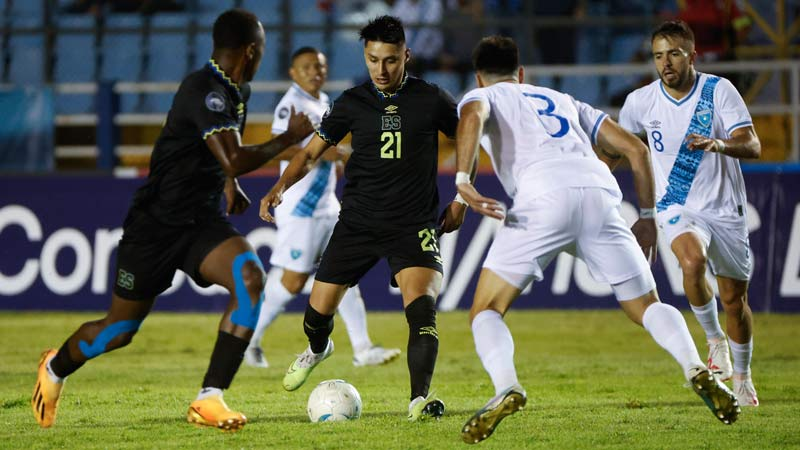

Bienvenido a La Selecta SV
Encuentra noticias, resultados y análisis sobre la Selecta y el fútbol salvadoreño. También te traemos lo último de la Champions, LaLiga y competiciones internacionales.
📸 Galería de Fútbol

Encuentra noticias, resultados y análisis sobre la Selecta y el fútbol salvadoreño. También te traemos lo último de la Champions, LaLiga y competiciones internacionales.
